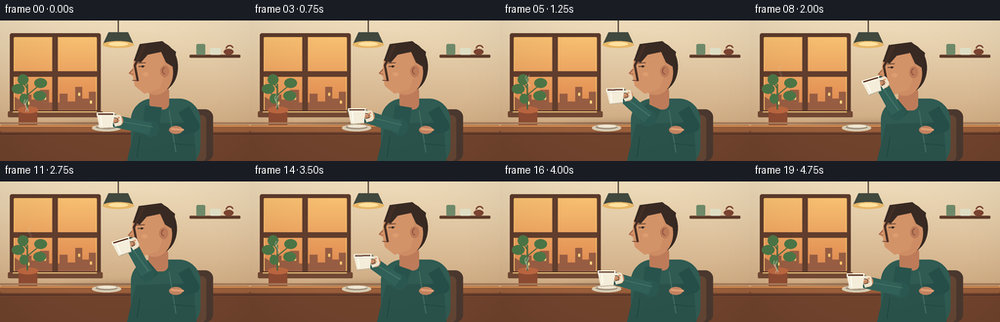
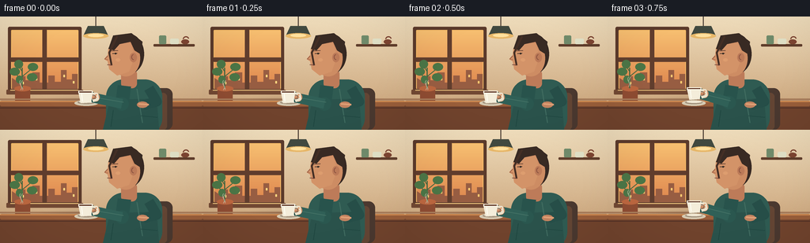
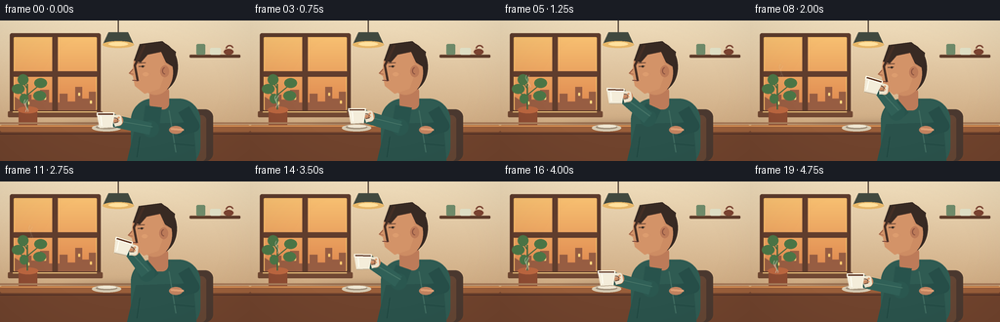
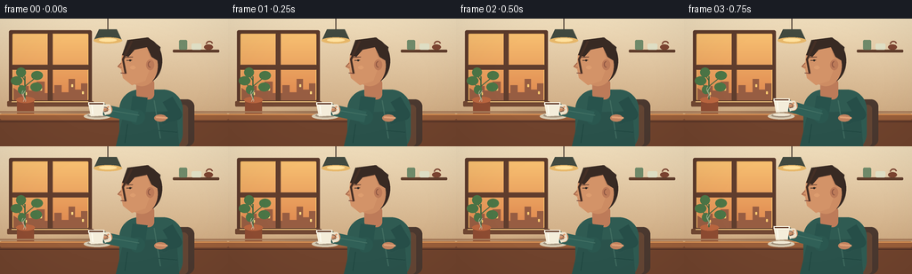

CODING AGENTS AS PIXEL WORLD MODELS
traex/GPT-5.6-Sol · motion_rationality_0003
点击播放 · 原生 RGB 像素
逐轮保存的候选
回放视频、检查图与代码变化。
每份候选均可单独播放。实际图片检查记录在下方工具轨迹中。
候选 01播放与检查图
点击播放 · 原生 RGB 像素


展开代码变化
--- 上一保存版本
+++ 本次保存版本
@@ -0,0 +1,305 @@
+from pathlib import Path
+import json
+import math
+
+import numpy as np
+from PIL import Image, ImageDraw, ImageFilter
+
+import artifact_io
+
+
+CASE_DIR = Path(__file__).resolve().parent
+SPEC = json.loads((CASE_DIR / "task_spec.json").read_text())
+W, H = SPEC["width"], SPEC["height"]
+N = SPEC["frames"]
+SS = 4
+
+
+def sc(v):
+ return int(round(v * SS))
+
+
+def box(coords):
+ return tuple(sc(v) for v in coords)
+
+
+def pts(seq):
+ return [(sc(x), sc(y)) for x, y in seq]
+
+
+def smooth(x):
+ x = max(0.0, min(1.0, x))
+ return x * x * (3.0 - 2.0 * x)
+
+
+def lerp(a, b, t):
+ return a + (b - a) * t
+
+
+def rot_pt(cx, cy, x, y, angle):
+ a = math.radians(angle)
+ ca, sa = math.cos(a), math.sin(a)
+ return cx + x * ca - y * sa, cy + x * sa + y * ca
+
+
+def line(draw, xy, fill, width, joint="curve"):
+ draw.line(pts(xy), fill=fill, width=sc(width), joint=joint)
+
+
+def ellipse(draw, xy, fill, outline=None, width=1):
+ draw.ellipse(box(xy), fill=fill, outline=outline, width=sc(width))
+
+
+def polygon(draw, xy, fill):
+ draw.polygon(pts(xy), fill=fill)
+
+
+def rounded(draw, xy, radius, fill, outline=None, width=1):
+ draw.rounded_rectangle(box(xy), radius=sc(radius), fill=fill,
+ outline=outline, width=sc(width))
+
+
+def background(frame_index):
+ """Warm cafe, built from gradients and geometry only."""
+ h, w = H * SS, W * SS
+ yy = np.linspace(0, 1, h, dtype=np.float32)[:, None, None]
+ top = np.array([239, 221, 188], np.float32)[None, None, :]
+ bot = np.array([196, 154, 111], np.float32)[None, None, :]
+ wall = np.repeat(top * (1 - yy) + bot * yy, w, axis=1)
+ # Fine deterministic paper/plaster texture.
+ rng = np.random.default_rng(31415)
+ noise = rng.normal(0, 1.25, (h, w, 1))
+ wall = np.clip(wall + noise, 0, 255).astype(np.uint8)
+ im = Image.fromarray(wall, "RGB")
+ d = ImageDraw.Draw(im)
+
+ # Framed sunset window.
+ rounded(d, (10, 13, 103, 96), 2, (91, 58, 43))
+ rounded(d, (14, 17, 99, 92), 1, (246, 188, 104))
+ for y in range(sc(18), sc(92)):
+ q = (y / SS - 18) / 74
+ col = (int(247 - 25*q), int(191 - 57*q), int(113 - 35*q))
+ d.line([(sc(15), y), (sc(98), y)], fill=col, width=1)
+ # Distant city silhouettes.
+ polygon(d, [(15, 78), (15, 92), (98, 92), (98, 73), (91, 73),
+ (91, 80), (84, 80), (84, 68), (77, 68), (77, 83),
+ (69, 83), (69, 75), (61, 75), (61, 84), (50, 84),
+ (50, 71), (41, 71), (41, 81), (32, 81), (32, 76),
+ (24, 76), (24, 84)], (151, 93, 66))
+ # A few warm window lights, subtly alternating.
+ glow = (255, 216, 129) if (frame_index // 2) % 2 == 0 else (250, 202, 112)
+ for x, y in [(28, 83), (45, 78), (80, 74), (92, 82)]:
+ rounded(d, (x, y, x + 2, y + 3), .3, glow)
+ rounded(d, (53.5, 17, 59, 92), .5, (96, 61, 45))
+ rounded(d, (14, 52, 99, 57.5), .5, (96, 61, 45))
+ # Warm reflection along the sill.
+ rounded(d, (8, 93, 105, 99), 1, (113, 72, 51))
+ d.line(pts([(13, 93.5), (99, 93.5)]), fill=(249, 207, 132), width=sc(1))
+
+ # Shelf and cafe objects on the right.
+ rounded(d, (194, 35, 246, 38), 1, (95, 61, 43))
+ rounded(d, (201, 24, 210, 35), 1.5, (111, 138, 106))
+ rounded(d, (215, 28, 226, 35), 1.5, (224, 224, 198))
+ ellipse(d, (229, 29, 239, 35), (124, 68, 49))
+ d.arc(box((231, 25, 239, 32)), 180, 350, fill=(124, 68, 49), width=sc(1.4))
+
+ # Hanging lamp and soft pool of light.
+ line(d, [(121, 0), (121, 12)], (77, 63, 53), 1.3)
+ polygon(d, [(111, 12), (131, 12), (137, 25), (105, 25)], (65, 73, 63))
+ ellipse(d, (105, 21, 137, 28), (231, 183, 105))
+ ellipse(d, (111, 22, 131, 26), (255, 225, 158))
+
+ # Plant behind the table.
+ rounded(d, (19, 91, 38, 113), 2, (142, 76, 50))
+ ellipse(d, (18, 88, 39, 95), (187, 102, 63))
+ line(d, [(28, 91), (28, 65)], (69, 103, 65), 1.5)
+ line(d, [(28, 80), (18, 72)], (69, 103, 65), 1.1)
+ line(d, [(28, 76), (39, 67)], (69, 103, 65), 1.1)
+ line(d, [(28, 70), (23, 62)], (69, 103, 65), 1.1)
+ for e in [(12, 65, 25, 75), (35, 59, 48, 69), (18, 55, 29, 66),
+ (34, 72, 47, 82), (20, 75, 29, 85)]:
+ ellipse(d, e, (75, 117, 70))
+ # Wall trim.
+ d.line(pts([(0, 105), (256, 105)]), fill=(166, 122, 89), width=sc(2))
+ return im
+
+
+def cup_shape(im, cx, cy, angle, steam_strength, frame_index):
+ """Ceramic cup with a true rotated local coordinate system."""
+ d = ImageDraw.Draw(im)
+ tf = lambda x, y: rot_pt(cx, cy, x, y, angle)
+
+ # Handle behind body.
+ hp = [tf(7.5, -3), tf(14, -3), tf(15, 3), tf(9, 5)]
+ line(d, hp, (236, 226, 203), 4.2)
+ line(d, [tf(8.5, -2), tf(12.5, -1.5), tf(12.5, 2.2), tf(9, 3)],
+ (117, 86, 67), 1.3)
+ # Tapered cup body.
+ body = [tf(-9, -6), tf(9, -6), tf(7, 8), tf(-6, 9)]
+ polygon(d, body, (244, 237, 218))
+ line(d, [tf(-6, 8.5), tf(6.5, 7.6)], (185, 170, 146), 1)
+ # Rim and coffee surface are short thick strokes so rotation remains coherent.
+ line(d, [tf(-9, -6), tf(9, -6)], (255, 252, 237), 3.4)
+ line(d, [tf(-7.8, -6), tf(7.8, -6)], (91, 49, 30), 1.5)
+ line(d, [tf(-5, -3.8), tf(-4, 6)], (255, 255, 245), 1.1)
+
+ # Steam is most visible while the cup is level and never detached from rim.
+ if steam_strength > .03:
+ overlay = Image.new("RGBA", im.size, (0, 0, 0, 0))
+ sd = ImageDraw.Draw(overlay)
+ sway = math.sin(frame_index * 0.85) * 1.2
+ for j, off in enumerate((-4.0, 2.0)):
+ x0, y0 = tf(off, -8)
+ path = []
+ for k in range(9):
+ u = k / 8
+ path.append((x0 + (math.sin(u * math.pi * 2 + j) * 1.4 + sway*u) * SS,
+ y0 * SS - u * 13 * SS))
+ sd.line(path, fill=(255, 248, 222, int(115 * steam_strength)),
+ width=sc(1.15))
+ overlay = overlay.filter(ImageFilter.GaussianBlur(sc(.35)))
+ im.alpha_composite(overlay)
+
+
+def render(index):
+ # Main action timing: settle, raise, sip, lower, settle.
+ if index <= 2:
+ p = 0.0
+ elif index <= 7:
+ p = smooth((index - 2) / 5)
+ elif index <= 11:
+ p = 1.0
+ elif index <= 17:
+ p = smooth((17 - index) / 6)
+ else:
+ p = 0.0
+ sip = smooth((p - .72) / .28)
+ if 8 <= index <= 11:
+ sip = 1.0
+
+ base = background(index).convert("RGBA")
+ d = ImageDraw.Draw(base)
+
+ # Table and grounding shadow.
+ shadow = Image.new("RGBA", base.size, (0, 0, 0, 0))
+ sd = ImageDraw.Draw(shadow)
+ sd.ellipse(box((37, 105, 236, 132)), fill=(68, 39, 27, 65))
+ shadow = shadow.filter(ImageFilter.GaussianBlur(sc(4)))
+ base.alpha_composite(shadow)
+ d = ImageDraw.Draw(base)
+ polygon(d, [(0, 111), (256, 111), (256, 144), (0, 144)], (112, 67, 45))
+ rounded(d, (0, 107, 256, 114), 2, (153, 94, 58))
+ d.line(pts([(0, 108), (256, 108)]), fill=(218, 147, 85), width=sc(1.2))
+ d.line(pts([(0, 116), (256, 116)]), fill=(79, 47, 37), width=sc(1))
+
+ # Saucer stays behind when the cup lifts.
+ ellipse(d, (94, 106.5, 124, 113.5), (214, 202, 178))
+ ellipse(d, (98, 107.2, 120, 111.2), (161, 145, 124))
+ ellipse(d, (100, 107.1, 119, 109.7), (240, 231, 211))
+
+ # Chair silhouette behind the figure.
+ rounded(d, (177, 91, 218, 144), 8, (74, 56, 47))
+ rounded(d, (183, 97, 211, 144), 5, (99, 69, 52))
+
+ # Torso: broad, readable seated pose.
+ rounded(d, (134, 80, 205, 151), 22, (47, 91, 82))
+ polygon(d, [(139, 106), (130, 144), (201, 144), (198, 104)], (42, 82, 75))
+ # Sweater texture / folds.
+ line(d, [(173, 92), (180, 135)], (64, 108, 96), 1.2)
+ line(d, [(143, 119), (140, 140)], (32, 71, 65), 1.0)
+ line(d, [(178, 126), (199, 128)], (32, 71, 65), 1.0)
+
+ # Far arm rests naturally on the table.
+ line(d, [(188, 91), (198, 108), (181, 113)], (38, 78, 72), 13)
+ ellipse(d, (173, 108, 187, 116), (193, 130, 95))
+ line(d, [(175, 111), (188, 112)], (223, 159, 117), 2.2)
+
+ # Neck, then head in left-facing profile. Head inclines slightly during sip.
+ hx = -1.0 * sip
+ hy = 1.0 * sip
+ rounded(d, (153 + hx, 67 + hy, 173 + hx, 91 + hy), 6, (189, 123, 89))
+ # Ear/back hair mass.
+ ellipse(d, (143 + hx, 22 + hy, 182 + hx, 73 + hy), (54, 40, 34))
+ ellipse(d, (141 + hx, 30 + hy, 177 + hx, 76 + hy), (205, 140, 99))
+ # Profile jaw and nose.
+ polygon(d, [(145 + hx, 34 + hy), (137 + hx, 40 + hy),
+ (136 + hx, 49 + hy), (131.5 + hx, 54 + hy),
+ (136 + hx, 57 + hy), (138 + hx, 67 + hy),
+ (148 + hx, 75 + hy), (163 + hx, 70 + hy),
+ (170 + hx, 51 + hy), (165 + hx, 34 + hy)], (211, 147, 104))
+ # Hair cap and loose lock.
+ polygon(d, [(143 + hx, 24 + hy), (166 + hx, 21 + hy),
+ (180 + hx, 32 + hy), (178 + hx, 48 + hy),
+ (170 + hx, 43 + hy), (165 + hx, 32 + hy),
+ (151 + hx, 35 + hy), (144 + hx, 43 + hy),
+ (137 + hx, 41 + hy)], (56, 42, 35))
+ line(d, [(148 + hx, 25 + hy), (138 + hx, 46 + hy),
+ (141 + hx, 62 + hy)], (68, 47, 37), 2.2)
+ # Ear.
+ ellipse(d, (164 + hx, 46 + hy, 173 + hx, 58 + hy), (188, 122, 88))
+ d.arc(box((166 + hx, 48 + hy, 171 + hx, 55 + hy)), 80, 270,
+ fill=(137, 81, 63), width=sc(1))
+ # Eye; close for the satisfied sip.
+ blink = 1.0 if index in (9, 10) else 0.0
+ if blink:
+ line(d, [(142 + hx, 47 + hy), (148 + hx, 48 + hy)], (55, 43, 38), 1.1)
+ else:
+ line(d, [(142 + hx, 47 + hy), (148 + hx, 46.5 + hy)], (55, 43, 38), 1)
+ ellipse(d, (145 + hx, 46 + hy, 147 + hx, 48 + hy), (40, 35, 31))
+ line(d, [(141 + hx, 43.5 + hy), (149 + hx, 43 + hy)], (89, 57, 45), 1)
+ # Nose and mouth stay visible right at the rim.
+ line(d, [(136 + hx, 50 + hy), (132.2 + hx, 54 + hy), (136.5 + hx, 55 + hy)],
+ (151, 91, 68), .8)
+ line(d, [(135.5 + hx, 61 + hy), (141.5 + hx, 61.5 + hy)], (106, 57, 50), 1.0)
+ # Small cheek highlight.
+ ellipse(d, (146 + hx, 53 + hy, 152 + hx, 57 + hy), (221, 157, 111))
+
+ # Action arm: elbow bends and rises as hand remains attached to the handle.
+ cup_x = lerp(108, 125.2, p) - math.sin(math.pi * p) * 1.2
+ cup_y = lerp(101.8, 66.3, p) - math.sin(math.pi * p) * 2.3
+ cup_angle = -4.0 * p - 13.0 * sip
+ hand_x, hand_y = rot_pt(cup_x, cup_y, 12.0, .2, cup_angle)
+ elbow_x = lerp(154, 150, p)
+ elbow_y = lerp(111, 94, p)
+ shoulder = (157, 88)
+ # Upper arm and forearm, with circular joints and a cuff.
+ line(d, [shoulder, (elbow_x, elbow_y)], (40, 83, 76), 17)
+ ellipse(d, (elbow_x - 8.5, elbow_y - 8.5, elbow_x + 8.5, elbow_y + 8.5), (42, 87, 79))
+ line(d, [(elbow_x, elbow_y), (hand_x - 3, hand_y + 1)], (48, 96, 87), 13)
+ line(d, [(elbow_x + 2, elbow_y - 2), (hand_x - 5, hand_y)], (70, 116, 103), 1.1)
+ # Ribbed cuff follows the forearm endpoint.
+ ellipse(d, (hand_x - 7, hand_y - 6, hand_x + 1, hand_y + 6), (34, 72, 67))
+ # Palm behind handle.
+ ellipse(d, (hand_x - 4, hand_y - 5, hand_x + 6, hand_y + 6), (203, 139, 100))
+
+ # Cup is in front of palm and face, handle is exactly at the hand.
+ steam_strength = (1.0 - .55 * p) * (1.0 - .55 * sip)
+ cup_shape(base, cup_x, cup_y, cup_angle, steam_strength, index)
+ d = ImageDraw.Draw(base)
+ # Two fingers visibly curl around the handle.
+ f1 = rot_pt(cup_x, cup_y, 12.2, -1.3, cup_angle)
+ f2 = rot_pt(cup_x, cup_y, 12.8, 1.4, cup_angle)
+ line(d, [(hand_x + 2, hand_y - 3), f1], (222, 157, 112), 2.0)
+ line(d, [(hand_x + 2, hand_y), f2], (222, 157, 112), 1.8)
+
+ # Soft ambient vignette focuses the action without crushing detail.
+ arr = np.asarray(base.convert("RGB"), dtype=np.float32)
+ y, x = np.mgrid[0:H*SS, 0:W*SS]
+ nx = (x - W*SS*.52) / (W*SS*.72)
+ ny = (y - H*SS*.48) / (H*SS*.86)
+ vig = np.clip((nx*nx + ny*ny - .25) * .10, 0, .11)[..., None]
+ arr *= (1.0 - vig)
+ hi = Image.fromarray(np.clip(arr, 0, 255).astype(np.uint8), "RGB")
+ return np.asarray(hi.resize((W, H), Image.Resampling.LANCZOS), dtype=np.uint8)
+
+
+def main():
+ frames = np.stack([render(i) for i in range(N)], axis=0)
+ assert frames.shape == (N, H, W, 3)
+ assert frames.dtype == np.uint8
+ artifact_io.save(frames, CASE_DIR)
+ print(f"saved {N} RGB frames ({W}x{H}) to {CASE_DIR}")
+
+
+if __name__ == "__main__":
+ main()
候选 02播放与检查图
点击播放 · 原生 RGB 像素


展开代码变化
--- 上一保存版本
+++ 本次保存版本
@@ -70,7 +70,7 @@
rng = np.random.default_rng(31415)
noise = rng.normal(0, 1.25, (h, w, 1))
wall = np.clip(wall + noise, 0, 255).astype(np.uint8)
- im = Image.fromarray(wall, "RGB")
+ im = Image.fromarray(wall)
d = ImageDraw.Draw(im)
# Framed sunset window.
@@ -257,7 +257,9 @@
# Action arm: elbow bends and rises as hand remains attached to the handle.
cup_x = lerp(108, 125.2, p) - math.sin(math.pi * p) * 1.2
cup_y = lerp(101.8, 66.3, p) - math.sin(math.pi * p) * 2.3
- cup_angle = -4.0 * p - 13.0 * sip
+ # Positive screen-space rotation lowers the handle-side rim toward the
+ # left-facing profile's mouth, as a real sip requires.
+ cup_angle = 4.0 * p + 13.0 * sip
hand_x, hand_y = rot_pt(cup_x, cup_y, 12.0, .2, cup_angle)
elbow_x = lerp(154, 150, p)
elbow_y = lerp(111, 94, p)
@@ -289,7 +291,7 @@
ny = (y - H*SS*.48) / (H*SS*.86)
vig = np.clip((nx*nx + ny*ny - .25) * .10, 0, .11)[..., None]
arr *= (1.0 - vig)
- hi = Image.fromarray(np.clip(arr, 0, 255).astype(np.uint8), "RGB")
+ hi = Image.fromarray(np.clip(arr, 0, 255).astype(np.uint8))
return np.asarray(hi.resize((W, H), Image.Resampling.LANCZOS), dtype=np.uint8)
可观测工具轨迹
实际执行的命令与返回图片。
命令 1exit 0
/bin/bash -lc "cat prompt.txt && printf '\\n--- GENERATION_RULES.md ---\\n' && cat GENERATION_RULES.md"
命令 2exit 0
/bin/bash -lc "cat task_spec.json && printf '\\n--- FILES ---\\n' && find . -maxdepth 2 -type f -printf '%p\\n' | sort"
命令 3exit 0
/bin/bash -lc "which ffmpeg || true; which python3 || true; python3 - <<'PY' mods=['cv2','numpy','PIL','imageio','moviepy','cairo'] for m in mods: try: mod=__import__(m); print(m, 'OK', getattr(mod,'__version__','')) except Exception as e: print(m,'NO',e) PY"
命令 4exit 0
/bin/bash -lc "sed -n '1,260p' artifact_io.py"
命令 5exit 0
/bin/bash -lc "sed -n '1,220p' player_template.html"
命令 6exit 0
/bin/bash -lc 'python3 generate.py'
命令 7exit 0
/bin/bash -lc "python3 generate.py && python3 - <<'PY'
from pathlib import Path
import json, numpy as np
from PIL import Image
p=Path('.')
s=json.loads((p/'task_spec.json').read_text())
z=np.load(p/'pixels.npz')['pixels']
print('pixels',z.shape,z.dtype,'expected',(s['height'],s['width'],s['frames']))
files=sorted((p/'frames').glob('*.png'))
print('frames',len(files),'artifacts',[(x.name,x.stat().st_size) for x in [p/'pixels.npz',p/'inspection.png',p/'transition_check.png',p/'index.html']])
a=np.stack([np.asarray(Image.open(f).convert('RGB')) for f in files])
mad=np.abs(a[1:].astype(np.int16)-a[:-1].astype(np.int16)).mean((1,2,3))
print('dtype/shape/range',a.dtype,a.shape,(a.min(),a.max()))
print('adjacent MAD',np.round(mad,2).tolist())
print('motion mean/max',float(mad.mean()),float(mad.max()),'unique frames',len({x.tobytes() for x in a}))
# Ensure npz unpacking exactly matches PNG output.
unpack=np.stack([np.stack([(z[:,:,i]>>16)&255,(z[:,:,i]>>8)&255,z[:,:,i]&255],-1) for i in range(s['frames'])]).astype(np.uint8)
print('npz matches png',bool(np.array_equal(a,unpack)))
PY"保存候选 2 份；完成命令 7 次；可验证图片返回 0 张。原始 API 响应与完整日志保留在本地。